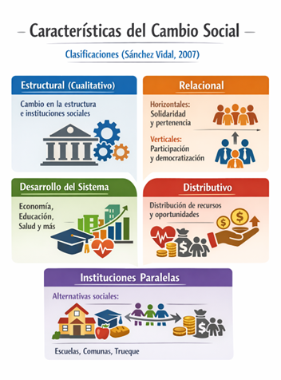
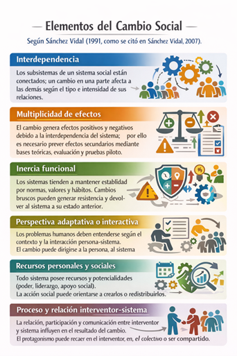

Bienvenida

El equipo yemas les da la mas coordial BIENVENIDA

Problemas Sociales
- Según Montenegro (2004): una situación que representa una falta de armonía con los valores o normas generales de una sociedad dada, o un fenómeno que tiene impacto negativo sobre la vida de un segmento considerable de la población.
- Según Arteaga Botello (2021): un fenómeno que es construido socialmente que depende de cómo diversos actores sociales traducen tensiones y conflictos en demandas públicas de justicia o reparación ante la sociedad en su conjunto.
- Tendencia de Objetivismo: El estudio sistemático (utiliza la observación y medición científica) de las condiciones de vida de las personas para detectar las problemáticas que les envuelven. Los problemas sociales son responsabilidad del estado.
- Tendencia de Subjetivismo/Intersubjetividad: Un problema social es lo que un grupo significativo de la sociedad percibe y define como problema y a la vez pone en marcha acciones para resolverlo. Asume que existen diferentes grupos sociales y que éstos tienen intereses distintos y, a veces, contrapuestos.
Condiciones para que algo sea un problema social según esta tendencia:- Un grupo nota que algo les afecta.
- Ese grupo logra convencer a otros de que el problema es real.
- Existe la posibilidad y el deseo de transformar esa realidad.
- Punto de Vista Intermedio: Un problema social se manifiesta cuando un grupo es consciente de una condición social objetiva que afecta a sus valores y que la solución se puede dar mediante una acción colectiva.
- 1. Condición Social Percibido como una Problemática: Una condición negativa debe ser interpretada y presentada públicamente como un asunto que requiere atención e intervención colectiva.
- 2. Construcción Social mediante Discursos e Instituciones: El problema social surge cuando actores sociales traducen tensiones y conflictos en términos de demandas de justicia o reparación.
- 3. Inclusión en la Esfera Pública: El problema trasciende ámbitos privados o sectoriales y se societaliza.
- 4. Exigencia de Transformación Institucional o Social: La construcción de un problema social implica que se exijan cambios por parte de instituciones o estructuras de poder que se perciben como responsables o vinculadas con esa condición social.
- Construcción Social: El problema social no es inherentemente problemático por sí mismo, sino que es interpretado y definido colectivamente a través de discursos públicos e institucionales.
- Societalización: El proceso por el cual una condición o conflicto se traslada de esferas no civiles hacia la esfera civil pública, donde se convierte en un problema que exige atención colectiva.

Cambios Sociales
El cambio social se define como la modificación en la estructura o funcionamiento de un sistema social que impacta significativamente la vida de sus miembros. Implica transformaciones en los sistemas normativos, relacionales y de establecimiento de metas, afectando las relaciones horizontales y verticales entre individuos y grupos sociales (Sánchez Vidal, 2007).
- Estructural (cualitativo): Transforma la estructura institucional, las funciones de las instituciones sociales y las relaciones entre los distintos sistemas sociales.
- Relacional: Modifica las relaciones entre individuos o grupos.
- Horizontales: fortalecimiento de la solidaridad y el sentido de pertenencia.
- Verticales: mayor participación y democratización en la toma de decisiones.
- Desarrollo del sistema (cuantitativo): Implica el fortalecimiento de las potencialidades del sistema y de sus miembros, promoviendo el desarrollo integral de áreas como economía, educación, salud, urbanismo y participación social.
- Distributivo: Cambia la distribución y el acceso a recursos sociales como poder, dinero, prestigio o información, mediante estrategias como igualdad de oportunidades, redistribución de ingresos, gratuidad de servicios básicos y empoderamiento social.
- Instituciones paralelas: Creación de alternativas sociales cuando las instituciones existentes no satisfacen las necesidades de la población, como escuelas alternativas, comunidades terapéuticas o sistemas de trueque.

Según Sánchez Vidal (1991, como se citó en Sánchez Vidal, 2007):
- Interdependencia: Los subsistemas de un sistema social están conectados; un cambio en una parte afecta a las demás según el tipo e intensidad de sus relaciones.
- Multiplicidad de efectos: El cambio genera efectos positivos y negativos debido a la interdependencia del sistema; por ello es necesario prever efectos secundarios mediante bases teóricas, evaluación y pruebas piloto.
- Inercia funcional: Los sistemas tienden a mantener estabilidad por normas, valores y hábitos. Cambios bruscos pueden generar resistencia y devolver al sistema a su estado anterior.
- Perspectiva adaptativa o interactiva: Los problemas humanos deben entenderse según el contexto y la interacción persona-sistema. El cambio puede dirigirse a la persona, al sistema o a la relación entre ambos.
- Recursos personales y sociales: Todo sistema posee recursos y potencialidades (poder, liderazgo, apoyo social). La acción social puede orientarse a crearlos o redistribuirlos.
- Evaluación dinámica: Antes de intervenir se debe analizar la evolución y dinámica del sistema, para actuar de forma estratégica y coherente con su dirección de cambio.
- Proceso y relación interventor-sistema: La relación, participación y comunicación entre interventor y sistema influyen en el resultado del cambio. El protagonismo puede recaer en el interventor, en el colectivo o ser compartido.

- Innovación Social: Prácticas nuevas que buscan transformar la realidad social mediante soluciones sostenibles, con participación de diversos actores sociales (Sáez Blasco, 2011; Phills Jr. et al., 2008; como se citó en Mesa Rodríguez y Restrepo Medina, 2020).
- Concientización: Proceso que vincula la liberación personal con la transformación social, permitiendo que las comunidades reconozcan su capacidad de cambiar su realidad (Martín-Baró, 1998, citado en Martín, 2024).
- Empoderamiento: Proceso mediante el cual individuos y colectivos ejercen control e influencia sobre decisiones que afectan su vida y su comunidad (Zimmerman, 2000).
- Acción Colectiva: Interacción estratégica basada en cooperación y compromiso compartido para alcanzar objetivos comunes, influida por las oportunidades del entorno (Cante, 2007).
- Abolición de la Esclavitud: El abolicionismo fue un movimiento político, social y moral que buscó eliminar la esclavitud y la trata de personas esclavizadas, especialmente entre los siglos XVIII y XIX. Se trató de un movimiento transatlántico que combinó campañas morales, presión política, movilización social y la resistencia de las propias personas esclavizadas para abolir una de las instituciones económicas más rentables de la edad moderna (Stauffer, 2012).
- Matrimonio Igualitario: Implica que parejas del mismo sexo puedan acceder al matrimonio civil con los mismos derechos que las parejas heterosexuales. La creación de instituciones separadas se considera discriminatoria, por lo que el matrimonio igualitario se vincula con el derecho a la igualdad y a la no discriminación (Ramírez, 2019).
- Sufragio Femenino: Es el derecho de las mujeres a votar y ser votadas en igualdad de condiciones que los hombres. Representa un logro central del movimiento feminista y el reconocimiento de las mujeres como ciudadanas con igualdad política y jurídica (Montes et al., 2021).
- Revolución Digital e Internet: Representan una nueva etapa histórica centrada en la información y la conectividad global. Este cambio implica pasar de un paradigma basado en la transformación de materia y energía a otro enfocado en la generación, procesamiento y circulación de información mediante tecnologías digitales (Hilbert, 2020).

Necesidades
Expresión de lo que un ser vivo requiere indispensablemente para su conservación y desarrollo. Es un sentimiento o estado ligado a la vivencia de una carencia, que impulsa un esfuerzo para suprimir esa falta o corregir el déficit.
- Necesidad normativa: La que identifican los expertos desde su conocimiento técnico, sin que la comunidad la haya manifestado necesariamente.
- Necesidad expresada: La que se convierte en demandas explícitas que la comunidad realiza a través de líderes, organizaciones o acciones colectivas.
- Necesidad percibida: La que se fundamenta en la opinión subjetiva que las personas tienen sobre una carencia, según cómo interpretan su realidad.
- Necesidad comparativa: La que surge al comparar comunidades, permitiendo detectar carencias al observar que otros grupos tienen algo de lo que se carece.
- Necesidad sentida: La que la comunidad vive directamente en su cotidianidad, reconociéndola y declarándola como problema que requiere solución.
- Concepto multifacético: Es compleja y no tiene una definición única aceptada universalmente; su significado varía según el contexto disciplinar y geográfico.
- Poblaciones específicas y vulnerables: Adquiere especial relevancia en grupos desatendidos como poblaciones rurales, sectores empobrecidos, personas sin hogar, minorías, inmigrantes, mayores, mujeres, niños vulnerables y personas con enfermedades crónicas.
- Carácter dinámico y contextual: Su definición y priorización varían en el tiempo según el contexto social, político, económico y los recursos disponibles.
- Relación con activos y fortalezas comunitarias: No debe evaluarse de forma aislada, sino en relación con los activos disponibles en la comunidad, pasando de un enfoque en déficits a uno basado en capacidades internas.
- Participación de la comunidad: Su detección requiere métodos cuantitativos y cualitativos, con tendencia creciente hacia enfoques participativos que incorporan la voz de los miembros, especialmente de grupos vulnerables.
- Detección de necesidades: Proceso de identificación de carencias y recursos en una comunidad para orientar la acción comunitaria.
- Satisfacción de necesidades: Beneficio que los miembros obtienen por su pertenencia a la comunidad.
- Problematización: Proceso de reflexión crítica mediante el cual la comunidad identifica y analiza sus necesidades como situaciones transformables.
- Autogestión: Capacidad comunitaria para generar condiciones que permitan satisfacer sus necesidades.
- Fortalecimiento: Desarrollo de capacidades y recursos comunitarios para controlar el entorno según sus necesidades.
- Concienciación: Toma de conciencia crítica sobre las necesidades derivadas de relaciones de opresión.
- Recursos: Elementos sociales disponibles para la consecución de necesidades comunitarias.
- Acceso: Posibilidad comunitaria de obtener y manejar recursos para satisfacer necesidades.
- Acceso a vivienda digna: Falta de viviendas asequibles y seguras que dificulta la estabilidad y calidad de vida de las familias, especialmente en contextos urbanos con costos elevados.
- Acceso a educación de calidad: Ausencia de escuelas adecuadas, recursos educativos o igualdad de oportunidades que limita el desarrollo y afecta el capital humano de la comunidad.
- Acceso a servicios básicos: Carencia de agua potable, electricidad, transporte público confiable y saneamiento que impacta negativamente en la salud y el bienestar general.

Referencias Bibliográficas
Alcívar Solorzano, I. M., & Alcívar Calderón, V. E. (2025). El acoso escolar y estrategias de prevención en estudiantes de básica media. Maestro y Sociedad, 22(4), 3405–3414.
Arteaga Botello, N. (2021). ¿Cómo se construye socialmente un problema social? Revista Mexicana de Ciencias Políticas y Sociales, 66(243), 455–459.
Bravo, J. (2019). Conceptos Básicos de Psicología Comunitaria. Desde la Acción Comunitaria al Cambio Social (Serie Creación n.° 55). Facultad de Psicología, Escuela de Psicología, Centro de Investigación en Educación Superior CIES - USS.
Burton, M. (2004). La psicología de la liberación: aprendiendo de América Latina. Polis: Investigación y Análisis Sociopolítico y Psicosocial, 1(4), 101-124.
Byrne, S. (2025). Trata de personas: un problema persistente. Victims and Offenders, 1(1), 1–13.
Cante, F. (2007). Acción colectiva, metapreferencias y emociones. Cuadernos de Economía, 26(47), 151-174.
Castro Alfaro, A., Restrepo Sierra, L. H., & López Alba, A. (2020). Experiencia de medición del índice de necesidades básicas insatisfechas en barrios en proceso de invasión en Aguachica, Cesar. Revista Facultad de Ciencias Económicas, 28(2), 109–119.
Hilbert, M. (2020). Digital technology and social change: The digital transformation of society from a historical perspective. Dialogues in Clinical Neuroscience, 22(2), 189-194.
Martín, S. A. (2024). Derivas regionales de la crisis de la psicología social. La subjetividad en clave histórica y social desde los aportes de la psicología de la liberación y de la psicología comunitaria. Salud Mental Y Comunidad, (17), 71–86.
Marín Escobar, J. (2015). Los procesos psicosociales comunitarios: Una mirada integral. Matices y horizonte de la investigación en trabajo social (pp. 319–365). Barranquilla: Universidad Simón Bolívar.
Mesa Rodríguez, M. C., y Restrepo Medina, L. P. (2020). El cambio social como resultado de innovación social mediante metodologías participativas: una revisión bibliométrica. El Ágora USB, 20(1), 50–65.
Montenegro Martínez, M. (2004). Comunidad y bienestar social. En G. Musitu Ochoa, J. Herrero Olaizola, L. Cantera Espinosa & M. Montenegro Martínez (Eds.), Introducción a la Psicología Comunitaria. UCO.
Montero, M. (2004). Relaciones entre psicología social comunitaria, psicología crítica y psicología de la liberación: Una respuesta latinoamericana. Psykhe, 13(2), 17-28.
Moreno Cámara, S., Palomino Moral, P. Á., Frías Osuna, A., & del Pino Casado, R. (2015). En torno al concepto de necesidad. Revista Española de Salud Pública, 89(3), 259–272.
Orellana Ramírez, M. I. (2019). El matrimonio civil igualitario como forma de ejercer el derecho a la igualdad y no discriminación. Foro: Revista de Derecho, (32), 103–121.
Parra, M. A. (2012). La psicología comunitaria en América Latina. Poiésis, 8(15).
Ravaghi, H., Guisset, A. L., Elfeky, S., Nasir, N., Khani, S., Ahmadnezhad, E., & Abdi, Z. (2023). A scoping review of community health needs and assets assessment: concepts, rationale, tools and uses. BMC Health Services Research, 23(1), 44.
Ronces Montes, V. (2020). El derecho a votar y ser votadas: el sufragio femenino. Analéctica, 6(41).
Sánchez Vidal, A. (2007). Manual de psicología comunitaria. Ediciones Pirámide.
Stauffer, J. (2012). Abolition and antislavery. En M. M. Smith & R. L. Paquette (Eds.), The Oxford Handbook of Slavery in the Americas. Oxford University Press.
Zimmerman, M. A. (2000). Empowerment theory. In J. Rappaport & E. Seidman (Eds.), Handbook of community psychology (pp. 43–63).